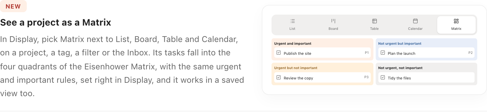
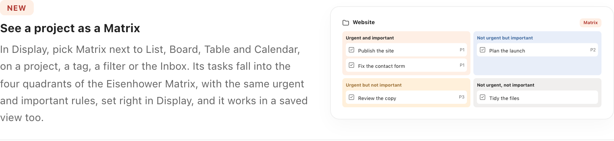
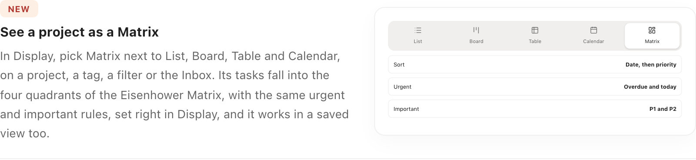
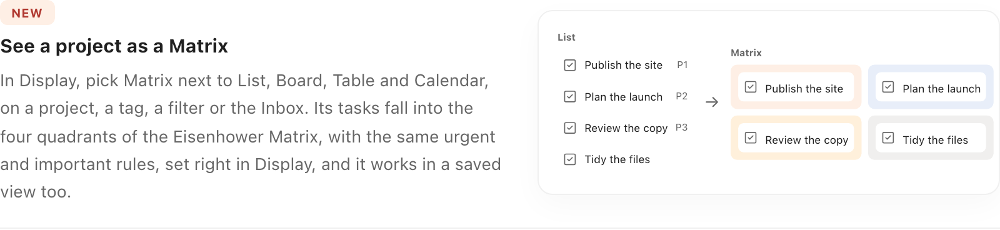
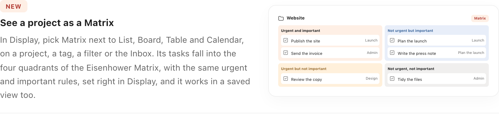

Changelog 2.30.0 · “Matrix view in projects” · five images
Same card as in What’s new, captured from the running app. The current image is first: its five modes wrap onto two lines and the quadrants are cut off.
Today. Cut off.

A. A project page in Matrix. Project title, a “Matrix” tab, the four quadrants with cards.

B. The Display panel. Matrix chosen among the five layouts, with Sort, Urgent and Important below.

C. From a list to a Matrix. The same four tasks as a list, then in the quadrants.

D. A project page with its details. Each card names its section; a subtask carries its parent’s name.

E. The matrix and its axes. Urgent / Not urgent across, Important / Not important down.